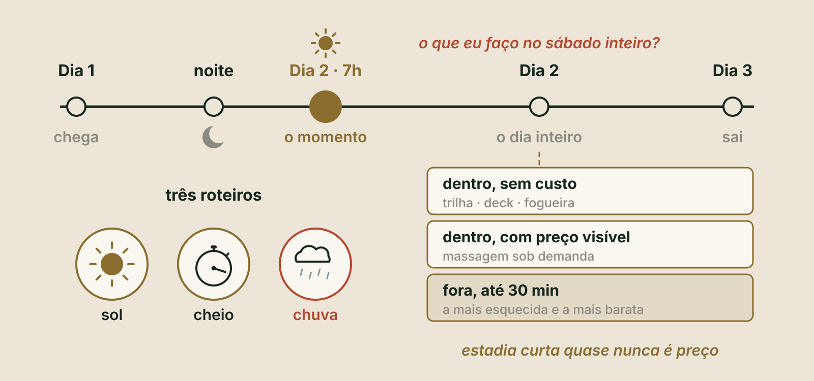
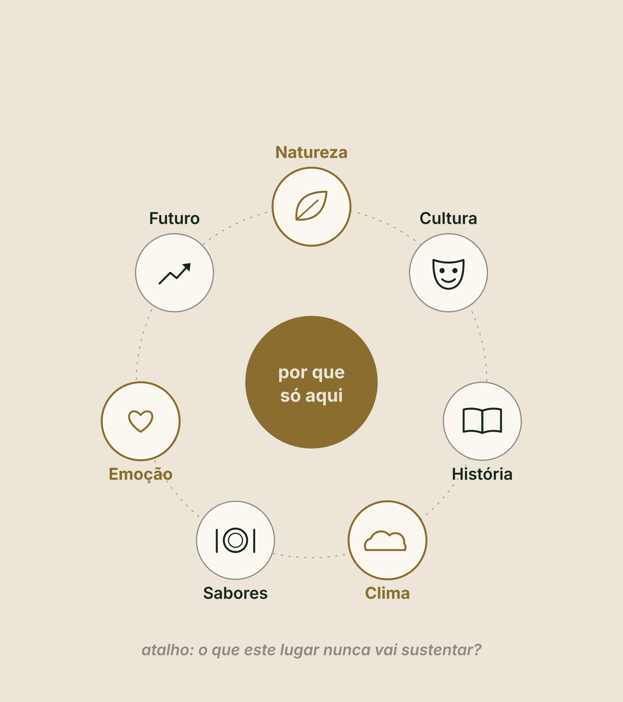
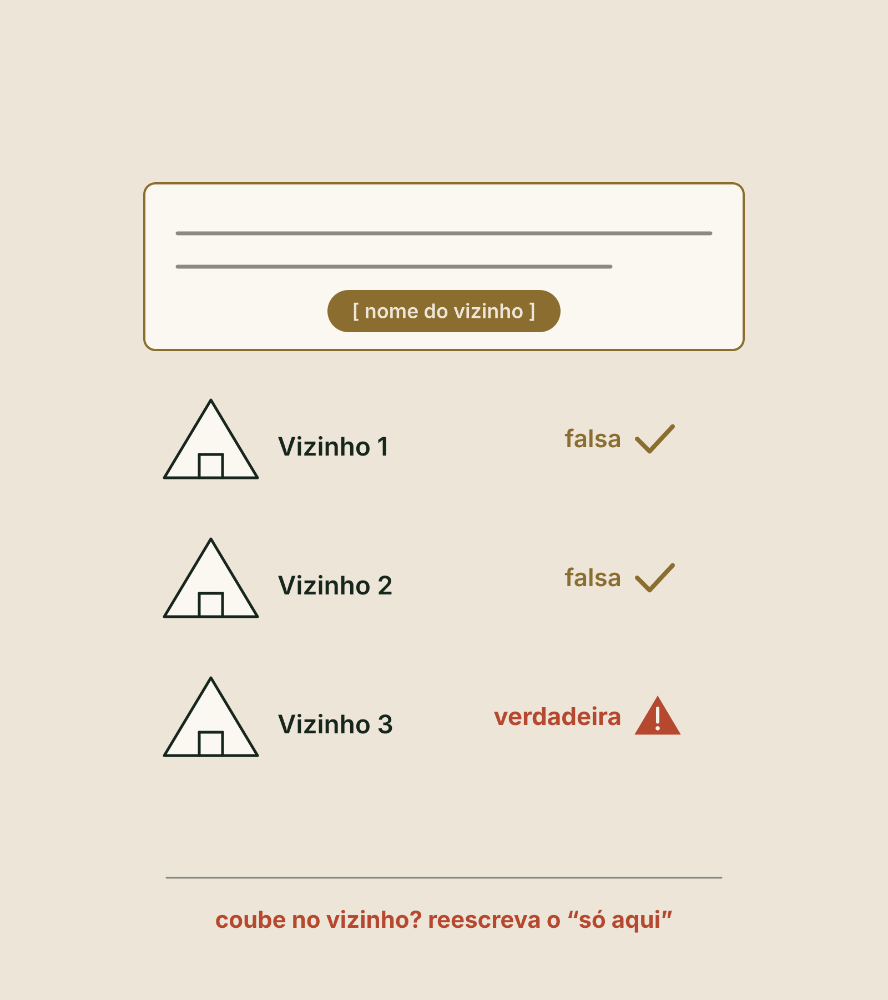

Método Zion · Etapa 2 · Desenhar o produto
Pilar 3
Produto e tipologias
O que você vende, e para quem. Você sai sabendo o seu nicho, o seu público, o momento que o hóspede leva para casa, a sua promessa e a unidade. E sai com a Ficha do Produto, a página 3 do seu Dossiê.
O que você vai fazer aqui
Assistir, responder e sair com a sua Ficha
Assistir
Dois vídeos curtos, um por bloco. Eles aparecem aqui dentro, no ponto certo.
Responder
Uma pergunta por tela, logo depois do trecho que a explica. Cada resposta fica salva na hora, neste aparelho.
Sair com a Ficha
No fim, a ferramenta abre aqui mesmo, já com as suas respostas. Você gera a Ficha do Produto em PDF: a página 3 do Dossiê.
DicaTenha à mão a sua Ficha do Mercado, do Pilar 2, e papel e caneta. Use os botões lá embaixo, ou as setas do teclado, para avançar.
Antes de começar · de cabeça
Três perguntas do Pilar 2
Sem voltar às páginas. Lembrar sem olhar é o que fixa. O produto de hoje nasce dos números do mercado.
Vídeo 1 de 2 · Bloco 1 · O nicho, para quem e o momento
De novo, nada de história: um checklist
Seis paradas, quatro partes em cada
- Como ler o checklist
- O leque e o nicho
- Para quem
- O que ele vive
- A promessa, com as provas e dois testes
- A unidade: tipologia, tamanho, o que entra e o mix
O que decidir
Por que importa
Como verificar
Sinal vermelho
O que manda parar e reescrever.
Produto é tudo o que o hóspede vive, e não só a cabana. Primeiro o que o hóspede vive, por último o que se constrói.
Parada 2 · O leque
O tipo de hospedagem é o jeito de receber
- Decida em que tipo você entra pelo serviço que vai prestar.
- A classificação e a licença do seu caso, você confirma com o advogado e com a prefeitura.
Sinal vermelhoChamar de pousada um chalé só alugado, sem serviço. Aí você não hospeda: aluga.
Quiz relâmpago · clique numa resposta
Glamping é a bolha?
Glamping é glamour com camping. E glamping não é a bolha: a bolha é uma barraca, não um imóvel, e é só uma das estruturas possíveis.
Parada 2 · O nicho
O pedaço do mercado que você escolhe atender
- Nicho é um tipo de hóspede, com um motivo de viagem.
- Você não escolhe do zero. Escolhe entre quem já viaja para lá, nas cem avaliações do Pilar 2.
- Compare a sua lista de comparáveis com o topo da faixa: o que o topo entrega e os outros não?
Amplitude acima de 3
O destino paga por quem entrega mais.
Amplitude abaixo de 2
A briga é de preço.
Inovar ou seguir o tradicional?
O topo entrega: vista, isolamento e banheira na varanda.
A decisão dela: glamping de cabana para casal.
A saturação
Toda tipologia que vira moda funciona enquanto é rara
E para quando vira a terceira igual na estrada. Saturação é quando muitos vizinhos já usam a mesma estrutura.
O teste: leia a sua ideia trocando a estrutura. Troque cabana por domo. Se continuar verdadeira, o diferencial é o território. Se morrer, é a estrutura, e estrutura qualquer um compra.
Antes de para quem: os quatro níveis do que se vende
Do mais fácil ao mais difícil de copiar
Clique em cada nível, ou avance: o que é e o que acontece com ele.
Quiz relâmpago · clique numa resposta
Qual dos quatro níveis sustenta o topo da faixa?
Os itens o vizinho copia em um mês, e o serviço depende de quem está no dia. Momentos projetados não se copiam sem o território. Só a experiência sustenta o topo da faixa.
Parada 3 · Para quem você vende
Escreva o público com o motivo
- Não casais, mas casais que viajam para quê. Sem público escrito, cada decisão da unidade vira gosto pessoal.
- Depois, um segundo público, que possa ocupar a terça: o fim de semana enche muito mais que a semana. Três públicos é demais.
- E escreva quem fica de fora: quem quebra a promessa feita a quem entra. Regra formal de aceitação de hóspede, você confirma com o advogado.
O casal que vem descansar.
Quem trabalha tranquilo, com mesa e boa internet.
Parada 4 · O que ele vive
A cama maior, a banheira na varanda, ou o vale às sete da manhã, visto da cama?
A cama e a banheira o concorrente compra amanhã. O vale, àquela hora, daquele ângulo, só existe no seu terreno.
E virar a cabana para o vale é uma decisão no papel, não uma obra.
Quiz relâmpago · clique numa resposta
Qual destas o concorrente não consegue comprar amanhã?
A cama e a banheira se compram. O vale àquela hora e daquele ângulo só existe no seu terreno. E virar a cabana para ele é decisão no papel, não obra.
O momento assinatura
O instante que concentra a lembrança
- Escolhido e repetido de propósito.
- Volte às duas visitas do Pilar 1, às sete da manhã e às cinco da tarde, e liste cinco candidatos.
Só existe aqui
Acontece sem você presente
Cabe numa frase
Dá foto
Falhou em um, sai da lista.
Sinal vermelhoEscolher vários. Quando tudo é especial, nada é lembrado.
Antes do bloco dois · a sua lição
O seu nicho, os seus públicos e o seu momento
Tudo isso já está na sua Ficha do Produto. Onde aparece "não sei", é tarefa com nome.
Vídeo 2 de 2 · Bloco 2 · A estadia, a promessa e a unidade
Neblina e céu limpo são clima
E clima não acontece todo dia
- Escreva a versão de todo dia do seu momento.
- A do clima vira a versão de gala.

A pergunta que o hóspede faz antes de reservar
"O que eu faço lá no sábado inteiro?"

Dentro e sem custo
Uma trilha, o deck e a fogueira.
Dentro, com preço visível
Massagem sob demanda.
Fora, a até 30 minutos
A mais esquecida.
Mês fraco pede produto, não desconto
Como você viu no Pilar 2. Crie uma estadia de domingo a quinta, com nome próprio, para o seu segundo público, vendida como estadia.
NuncaEsse valor por noite nunca vai para a tabela. E é hipótese, até o calendário mostrar procura.
Mexa você · a estadia de domingo a quinta
Começa no exemplo da MarinaUma estadia com nome próprio
Quiz relâmpago · clique numa resposta
A estadia de quatro noites sai vinte por cento abaixo. O valor por noite dela vai para a tabela?
Mês fraco pede produto, não desconto. A estadia tem nome próprio, é para o segundo público e é vendida como estadia. O valor por noite nunca vai para a tabela.
Agora, a promessa
O DNA do destino
É o que é próprio daquele lugar: natureza, cultura, história, clima, sabores, emoção e futuro.
É dele que sai a frase do produto.

A frase do produto
Em três partes
| Parte | A exigência |
|---|---|
| O que se vive | Concreto e com verbo |
| Para quem | Com o motivo da viagem |
| Por que só aqui | Uma evidência do território |
A terceira parte é a que protege: o vizinho pode oferecer o mesmo café, mas não tem a sua encosta voltada para o nascente.
Tire seis palavras · e escreva três provas
- Se a frase morre sem elas, é porque não tinha conteúdo.
- Provas são fatos que o hóspede pode conferir ao chegar. Promessa sem prova é publicidade.
- Com menos de três, ou você reduz a promessa, ou aumenta o produto.
Acordar com o vale entrando pela janela, para casais que precisam de silêncio, onde a cama olha o nascente e nada mais se move.
Dois testes
O do vizinho e o dos cinco segundos
- Vizinho: troque o seu nome pelo de cada um dos três comparáveis mais próximos. Se a frase continuar verdadeira para algum, reescreva o por que só aqui.
- Cinco segundos: mostre uma foto do terreno, no horário do seu momento, a cinco pessoas que nunca estiveram lá. Pergunte que experiência imaginam viver ali.
Sinal vermelhoCada uma imaginar uma coisa diferente. A frase volta para o DNA.

Quiz relâmpago · clique numa resposta
Três frases para o mesmo terreno. Qual tem as três partes e passa pela lista negra?
A primeira começa pela estrutura e não tem o por que só aqui. A segunda tem duas palavras da lista negra. Só a terceira tem o que se vive, para quem e por que só aqui.
Agora sim, a estrutura
Tipologia é o tipo de estrutura em que o hóspede dorme
Cada uma pede outro capital, outro prazo e outra manutenção. Três filtros, nesta ordem. Costumam sobrar duas.
O terreno permite
O capital cabe, em ordem de grandeza
O público procura
Marina: saem o contêiner, a alvenaria, a tenda e a casa inteira. Ela fica com a cabana de madeira.
O tamanho
A área sai do uso, não do orçamento
- Cama, banho, estar, mesa e cozinha.
- Uma cabana de 50 m² custa de 60% a 90% mais que uma de 25 m².
- E cobra só de 20% a 35% mais.

O que entra · clique em cada tipo
Três tipos de item
Movem a diária
VirarO hóspede paga a mais por eles.
Esperados
VirarChuveiro com pressão e isolamento acústico.
Ninguém nota
VirarPara cortar, corte do que ninguém nota.
O mix: com quatro unidades ou menos, costuma ser melhor tudo igual.
Quiz relâmpago · clique numa resposta
O orçamento apertou. De onde você corta?
Chuveiro com pressão e isolamento acústico são esperados. Para cortar, corte do que ninguém nota.
O preço
Preço é consequência do produto.
- Escreva a sua hipótese de diária média e compare com a da região, do Pilar 2.
- Mire a metade de cima da faixa.
- Não é promessa de diária: quem confirma são o anúncio e a reserva.
Esse é o checklist do produto
O seu compromisso dos próximos sete dias
A frase
Escreva dez versões da sua frase em trinta minutos, fique com uma e passe no teste do vizinho.
Se já passou
Fotografe às sete da manhã de onde a cama vai ficar e faça o teste dos cinco segundos.
Quem faz é você. No diagnóstico, você escreve esse compromisso com prazo e evidência.
O Pilar 3 em uma tela
O que ficou
- Produto é tudo o que o hóspede vive: primeiro o que ele vive, por último o que se constrói.
- O nicho sai de quem já viaja para lá, e só a experiência sustenta o topo da faixa.
- Um público principal com motivo, um segundo para a terça, e quem fica de fora.
- Um momento assinatura, e uma frase em três partes com três provas e dois testes.
- A unidade vem por último, o tamanho sai do uso e o preço é hipótese.
Para a Ficha sair com o seu nome
Quem é você e onde fica o terreno
Fica salvo neste aparelho. Se você já preencheu em outro pilar, trouxemos daqui. Nada é enviado nesta tela.
As suas respostas já estão aqui. Confira, gere o resultado e baixe a página 3 do seu Dossiê. No fim, envie para o Land Bank da Zion.
Próximo · Pilar 4
Modelo de negócio
Como o seu produto vira negócio: vender as unidades ou ficar com elas, quem opera, de onde vem cada real e qual é a porta de saída. Tudo isso vira a página 4 do Dossiê. Só siga com a Ficha do Produto na mão.
LembreteSalve o PDF na pasta Meu Dossiê.
Conteúdo educacional. A Marina é um exemplo ilustrativo e os números dela servem para ensinar o raciocínio. Preço e momento assinatura são hipóteses até serem testados. Classificação, licença e regras de aceitação de hóspede: quem confirma no seu caso é o advogado ou a prefeitura. Não é promessa de renda, retorno, ocupação, diária, crédito, compra ou sociedade. A Zion avalia cada caso.